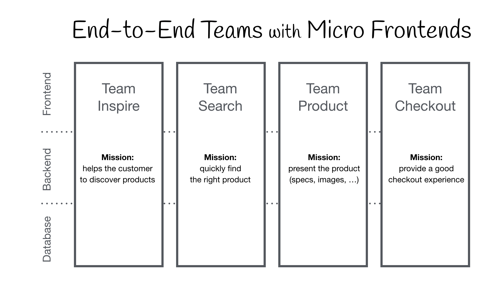

Agenda
Current State
ESS layout

Admin layout

Monolithic Artitecture

Monolithic


Evolution of Web Development

Next Step Of Evolution
Companies which using Microfrontend
...But not only


Why we need Microfrontend?
Development Speed
Massive Restructuring

Reduced Scope

Refactoring code
import {Component, OnInit} from '@angular/core';
import {Store} from '@ngrx/store';
import {FormGroup} from '@angular/forms';
import {LoginForm} from '../../../../app/core/models/LoginForm';
import {AppState} from '../../../../app/core/store/reducers/index';
import {LoginAction} from '../../../../app/core/store/actions/user/LoginAction';
@Component({
selector: 'gt-login-form',
templateUrl: 'gt-login-form.component.html',
styleUrls: ['gt-login-form.component.scss']
})
export class GtLoginFormComponent implements OnInit {
public model: LoginForm;
constructor(private store: Store) {
}
public ngOnInit() {
this.model = {
username: '',
password: '',
valid: false
};
}
public onSubmit(loginForm: FormGroup) {
this.model.valid = loginForm.valid;
this.store.dispatch(new LoginAction(this.model));
}
}
Performance
Testing
Code consistency, Coding standard
Upgrading Framework
Resilence
Maintenance
Simple, decoupled codebases
Flexibility in Using Technologies

Microfrontend architecture flow